AmberInset
9×9 · 8 colors · binary alpha
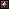
Ten separate native modules, made from PixelLab candidate 1 and cleaned in LibreSprite. The approved top, separator, board opening, cells, gems, portrait, side supports and bottom HUD are preserved.
Actual Unity art-only camera renders. This stage is not installed in the production Game scene. No drills yet; no merge. PixelLab: 10 generations (236.20 remaining).
Approved Stage 02
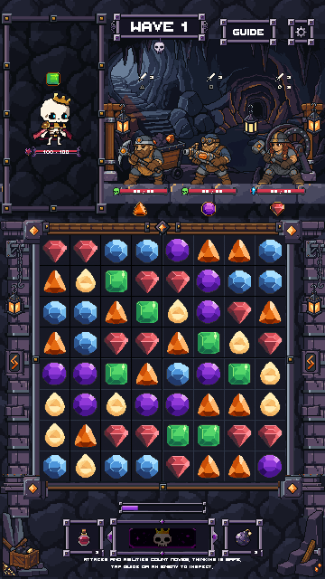
Stage 03 candidate

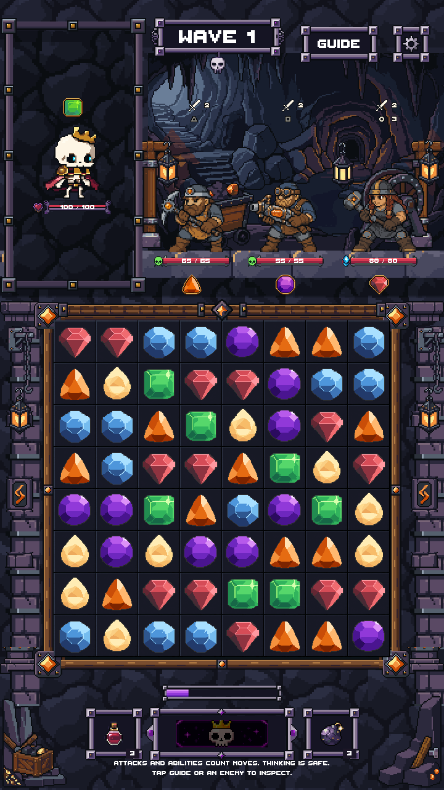
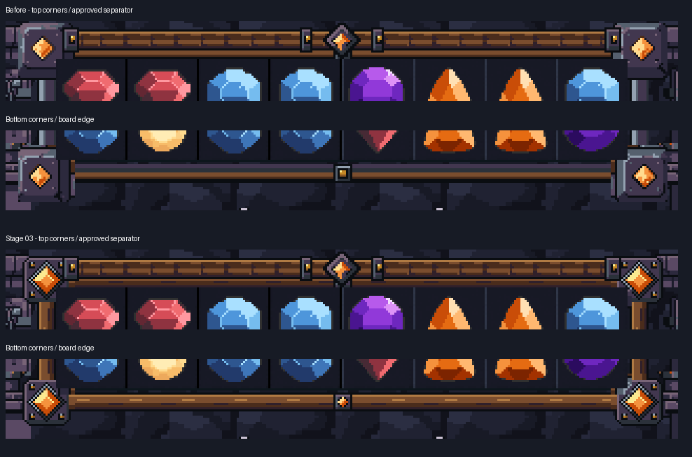
9×9 · 8 colors · binary alpha

27×27 · 18 colors · binary alpha
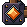
27×27 · 15 colors · binary alpha
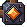
27×27 · 16 colors · binary alpha
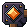
27×27 · 17 colors · binary alpha
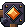
9×9 · 8 colors · binary alpha
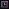
25×9 · 5 colors · binary alpha
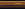
9×25 · 5 colors · binary alpha

9×25 · 5 colors · binary alpha
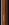
25×9 · 5 colors · binary alpha

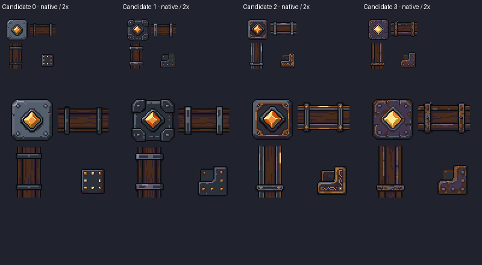
Native pixel and palette checks · Unity geometry and protected-pixel checks · Source preservation and usage